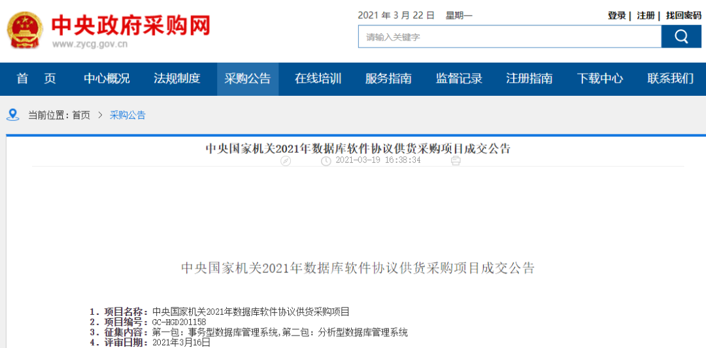
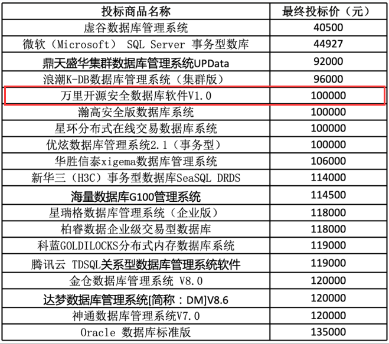

2021央采榜单花落谁家？万里安全数据库乘风而上 实力入围
3月19日，中央国家机关 2021 年数据库软件协议供货采购项目继公开征集后发布成交公告。公告显示，万里开源安全数据库软件入围第一包-事务型数据库管理系统。
安全数据库入围央采
入围政府采购领域级别最高、覆盖面最广项目
GreatDB实力获业界认可
中央国家机关政府集中采购项目是由中央国家机关政府采购中心组织的协议采购项目，是中国政府采购领域级别最高、覆盖面最广的采购项目之一。据悉，本次中央国家机关采购项目公开招标，共有三十余家企业参与响应，经过初审和详细评审后，对参与竞标的企业进行了包括数据存储、数据处理、查询优化售后服务、综合实力等多维度详细评审，最终确定了入围供应商名单。

中央政府采购网
此次入围事务型数据库央采名录，体现了国家权威评审机构对万里数据库技术实力、产品质量、服务水平、企业信誉等方面的的高度认可和信任，也充分证明万里安全数据库在政府客户等关键领域的可用可靠。

万里安全数据库软件入选名录
提供丰富的安全功能特性
全面保障用户数据安全&国产化需求
万里开源安全数据库软件是自主研发的原生分布式关系型数据库软件，具有动态扩展、数据强一致、集群高可用等众多企业级特性，同时提供更加丰富的安全功能特性，满足业务高并发、高扩展性、高安全性等需求，目前已广泛应用于金融、能源、电信、政府等领域，可充分满足用户数据安全、产品可控等国产化需求。
与此同时，安全数据库目前已适配龙芯、飞腾、鲲鹏、海光、麒麟、统信等主流国产软硬件平台，满足在全国产化平台上的部署与使用。
此外，尤其值得一提的是，本次央采项目入围中，除甲骨文的Oracle和微软的 SQL Server外，其余全部为国产数据库，份额占比达90%。这也意味着，国产数据库产品的创新能力和价值已获得政府客户的高度认可。数据库作为基础软件的核心基石，对其核心关键技术的自主掌握十分重要。
“十四五”规划纲要提出，要加强企业的科技创新主体作用，加强原创性引领性科技攻关，实现核心领域和关键技术的自主可控。
万里数据库作为国产分布式数据库的头部企业，将贯彻落实国家政策及政府规划，继续坚守核心关键技术自主创新，攻坚数据库“卡脖子”难题，与产业上下游伙伴共同推动国产软硬件产业生态建设，乘国家政策东风，为助力国家关键技术的自主可控与技术腾飞贡献万里力量！
推荐阅读1.热点 | 聚焦两会科技创新 万里数据库交出“数据库创新产品奖”完美答卷
2. 要闻 | 万里数据库荣膺2020年度数据库创新产品奖
3. 再获肯定 | 万里数据库入选《2020年度中国信创TOP500》


扫码二维码
关注公众号